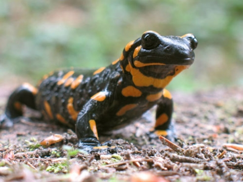

The mighty Salamanders
Our colorful friends
Salamanders are a group of amphibians with a lizard-like appearance, including short legs and a tail in both larval and adult forms.
Several species of salamander inhabit the temperate rainforest of the Pacific Northwest, including the Ensatina, the Northwestern Salamander and the Rough-skinned Newt. Most salamanders are nocturnal, and hunt for insects, worms and other small creatures.
The skin lacks scales and is moist and smooth to the touch, except in newts of the Salamandridae, which may have velvety or warty skin, wet to the touch. The skin may be drab or brightly colored, exhibiting various patterns of stripes, bars, spots, blotches, or dots. Male newts become dramatically colored during the breeding season. Cave species dwelling in darkness lack pigmentation and have a translucent pink or pearlescent appearance.
Salamanders range in size from the minute salamanders, with a total length of 2.7 cm (1.1 in), including the tail, to the Chinese giant salamander which reaches 1.8 m (5.9 ft) and weighs up to 65 kg (143 lb). Most, however, are between 10 and 20 cm (3.9 and 7.9 in) in length.
Trunk, limbs and tail An adult salamander generally resembles a small lizard, having a basal tetrapod body form with a cylindrical trunk, four limbs, and a long tail. Except in the family Salamandridae, the head, body, and tail have a number of vertical depressions in the surface which run from the mid-dorsal region to the ventral area and are known as costal grooves. Their function seems to be to help keep the skin moist by channeling water over the surface of the body.[5]
 Sirens have an eel-like appearance. Some aquatic species, such as sirens and amphiumas, have reduced or absent hind limbs, giving them an eel-like appearance, but in most species, the front and rear limbs are about the same length and project sidewards, barely raising the trunk off the ground. The feet are broad with short digits, usually four on the front feet and five on the rear. Salamanders do not have claws, and the shape of the foot varies according to the animal's habitat. Climbing species have elongated, square-tipped toes, while rock-dwellers have larger feet with short, blunt toes. The tree-climbing salamander (Bolitoglossa sp.) has plate-like webbed feet which adhere to smooth surfaces by suction, while the rock-climbing Hydromantes species from California have feet with fleshy webs and short digits and use their tails as an extra limb. When ascending, the tail props up the rear of the body, while one hind foot moves forward and then swings to the other side to provide support as the other hind foot advances.[6] In larvae and aquatic salamanders, the tail is laterally flattened, has dorsal and ventral fins, and undulates from side to side to propel the animal through the water. In the families Ambystomatidae and Salamandridae, the male's tail, which is larger than that of the female, is used during the amplexus embrace to propel the mating couple to a secluded location. In terrestrial species, the tail moves to counterbalance the animal as it runs, while in the arboreal salamander and other tree-climbing species, it is prehensile. The tail is also used by certain plethodontid salamanders that can jump, to help launch themselves into the air.[6] The tail is used in courtship and as a storage organ for proteins and lipids. It also functions as a defense against predation, when it may be lashed at the attacker or autotomised when grabbed. Unlike frogs, an adult salamander is able to regenerate limbs and its tail when these are lost.[6]